Case study
Generative AI Video
A generative-video toolkit for marketers: choose a template, write the script once with placeholders, and render a personalized video for every recipient.
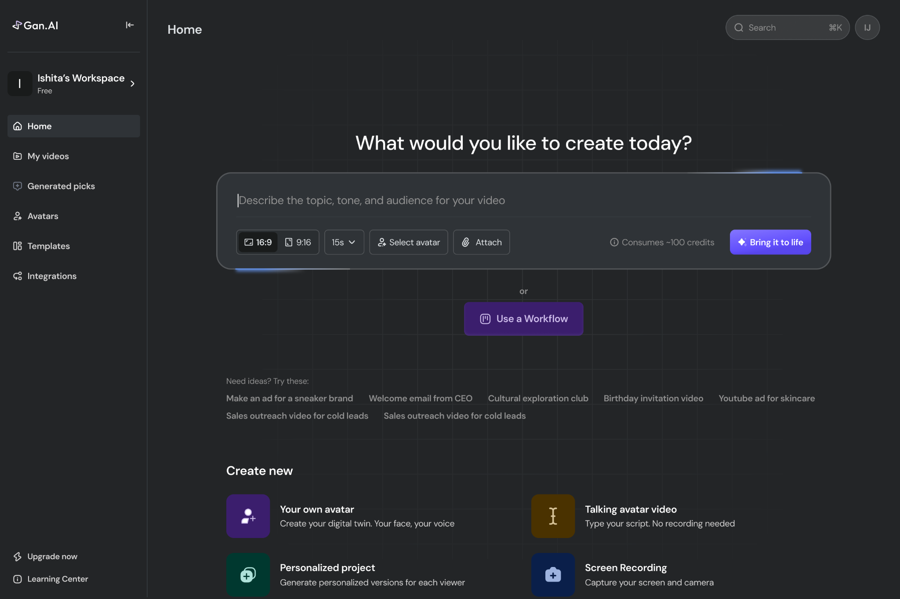
Gan.ai turns one video into thousands: a marketer records once, and the platform renders a personalized version for every recipient - their name, their company, spoken and on screen. I joined as the first designer and owned the product from prototype to Fortune 500-scale pilots, through the $5.25M seed round.
The piece here is templates: the starting point that decides whether a marketer ships a campaign in an afternoon or gives up on it. A template is a whole video - avatar, script, scenes, music, subtitles - where anything can become a variable, so one recording turns into a thousand personal sends.
The walk
The editor
One canvas for the whole video
Everything sits on one screen: the preview on the left, the script on the right, the scene controls underneath. The script reads like a message, not a timeline — “Dear @client” is the whole personalization model, visible at a glance.
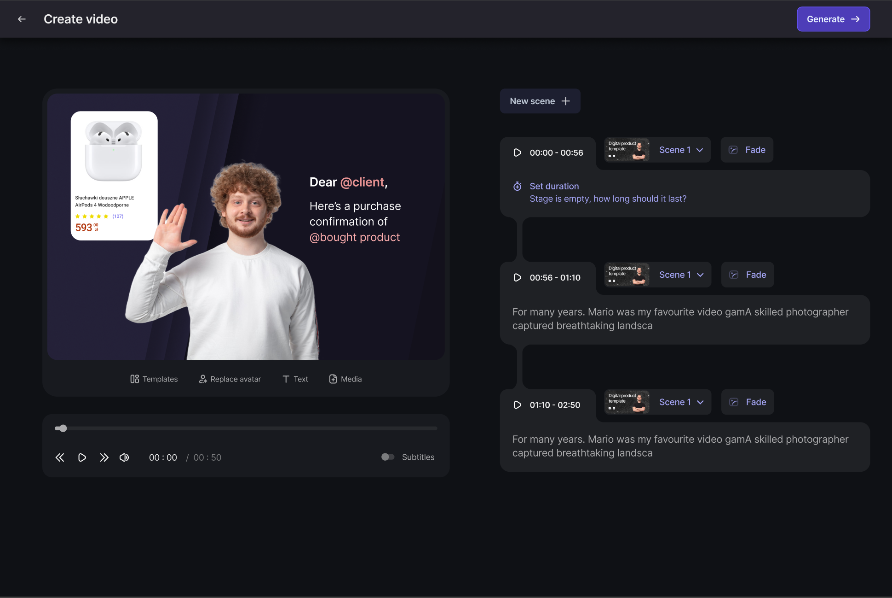
Variables
Anything on screen can become a placeholder
Select an image, a name, a product card and turn it into a variable. At render time each recipient's data fills it in — their name in the avatar's mouth, their purchase on screen. This is the mechanic that turns one video into thousands.
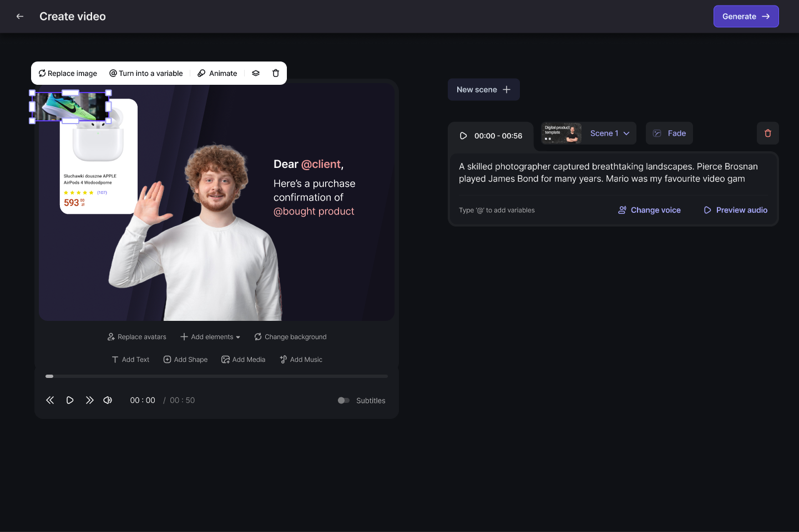
Scenes
Long videos stay editable
Templates break into scenes, each with its own timing and transition — slide in, slide out, fade. A marketer rearranges the story without ever touching footage.
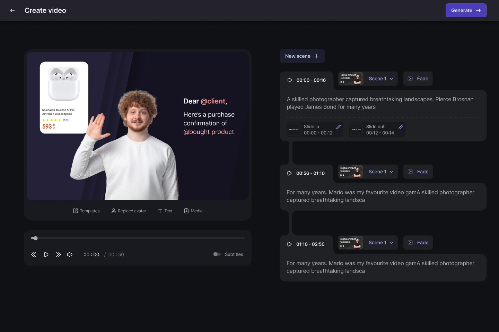
Avatars
Pick the face that fits the brand
A stock avatar library with search and category filters, plus the option to create a custom avatar from the marketer's own recording. Swapping the presenter never means re-recording.
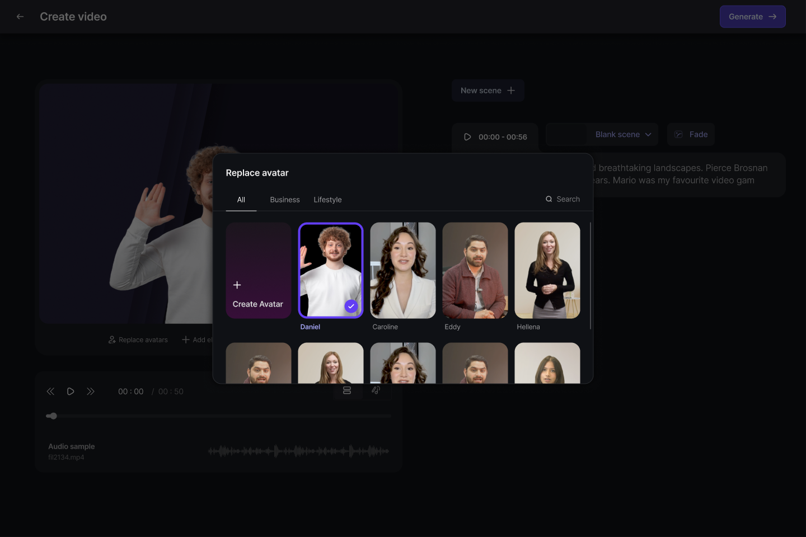
Voice
Write it, hear it, change it
The script drives a generated voiceover. Teams preview the read, change the voice, or record their own audio — inline, without leaving the scene.
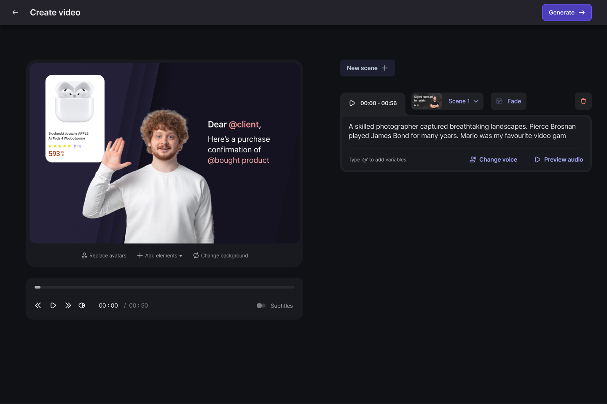
Music
A soundtrack, an upload away
Background music takes an MP3, MP4 or WAV straight from the desktop and applies across the video, so a campaign does not stall on sourcing audio.
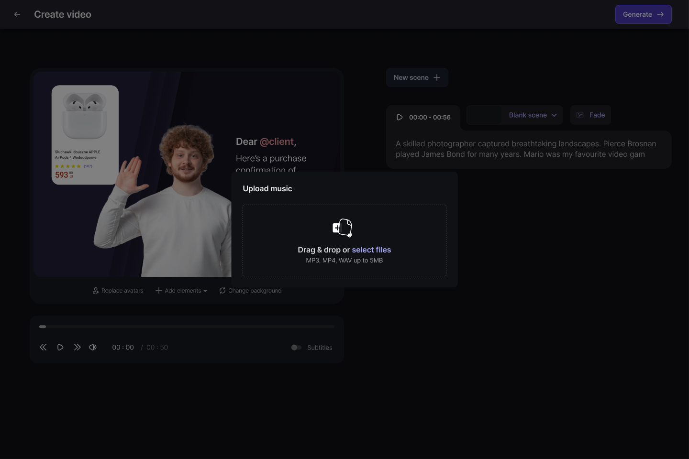
Media
Their own assets, or stock
The media library holds a workspace's uploads with a visible quota, and builds Unsplash and Giphy in, so the right campaign image is never more than a search away.
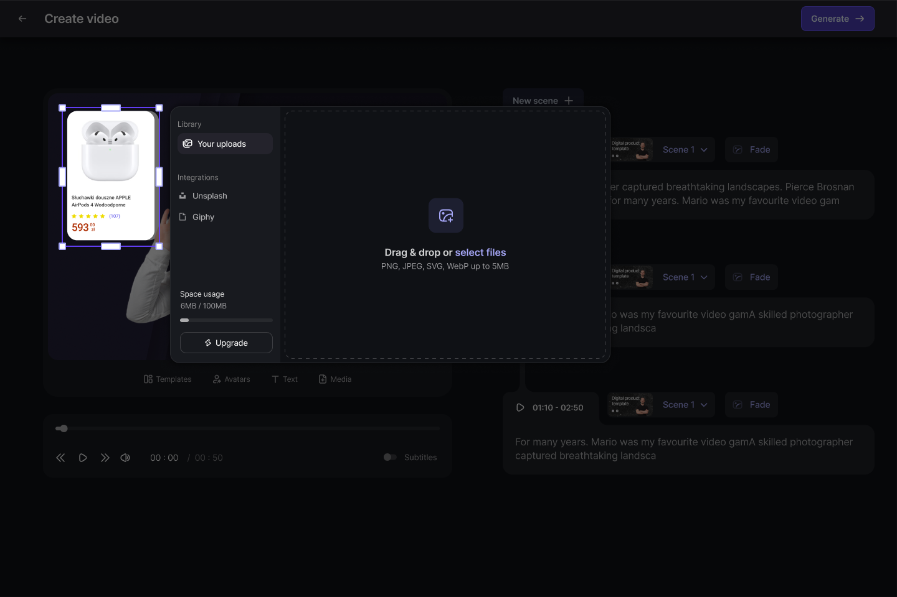
Subtitles
Readable by default
Subtitle styling is a designed system, not an afterthought: typeface, weight, size, shadow and background, plus a highlight that follows the spoken word — the difference between captions people read and captions people skip.
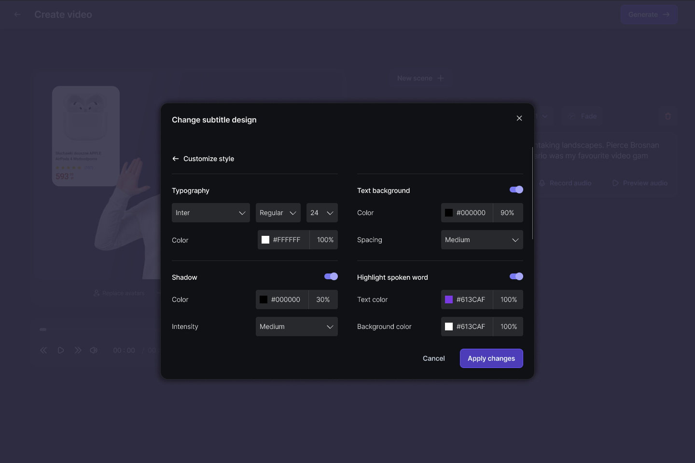
Design system
Dark for making, light for managing
The editor is a dark room; the library is a light desk. My videos runs the same system in light mode — every project and render with its status on the card, and the next action beside it: copy the link, see details, retry. One language, two surfaces.
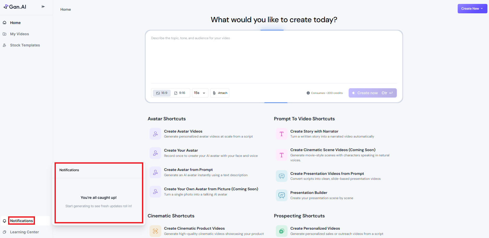
Render
Honest waiting
Generation takes minutes, and the screen says so: what is happening, how long is left, and explicit permission to leave — the video keeps processing in the background.
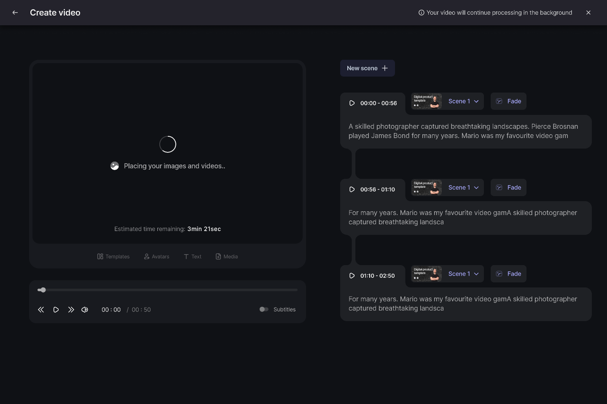
Templates
A starting point for every audience
Stock templates gave every team a running start: forty presenters across ages, industries and styles, filterable by the audience the video has to convince. A campaign for a bank and a campaign for a bakery both find a face that fits, and the template carries the script, scenes and styling with it.
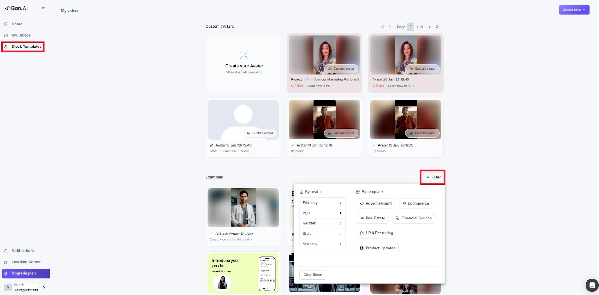
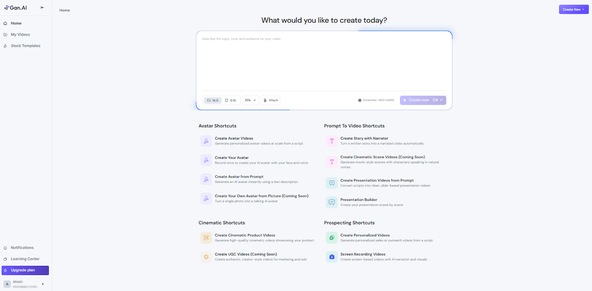
What it added up to
Templates became the front door of the product: the first surface a new user touched, and the thing pilots scaled on. The walk above is the whole loop - prompt, editor, variables, scenes, avatar, voice, music, media, subtitles, render - designed end to end as the company's first designer, from the prototype to the pilots that carried the seed round.